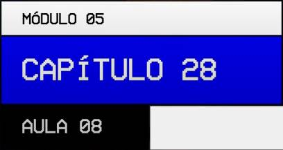

Créditos:
Continuação: Propriedades de container para Grids (parte 4):
--:--Em continuação aos estudos de Propriedades aplicáveis a "container" de "Grid Layout" , nesta aula vamos aprender o uso de uma função chamada repeat() e também vamos aprender a usar uma nova 'unididade de divisão' chamada fração = (fr)